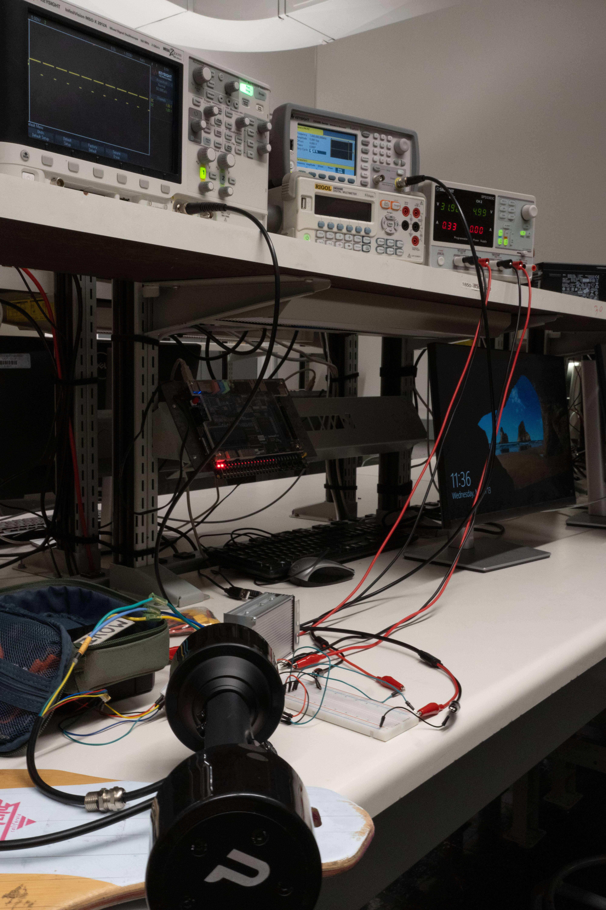
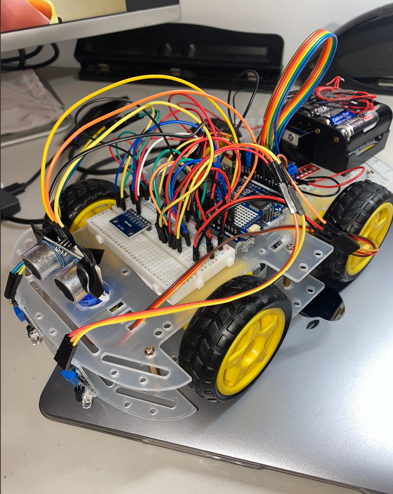

This Electric Longboard project was designed and engineered to address the urban "last-mile" commuting challenge
by offering an affordable, portable, and efficient solution for students and professionals. This
front-wheel-drive electric longboard integrates brushless DC motors, a custom-built wireless
control system, and advanced safety features like traction control and weight sensors.
System Design
The longboard incorporates dual BLDC motors powered by a 36V lithium-ion battery, controlled
through a wireless joystick-based ESP32 system and Raspberry Pi. To ensure stability and safety,
the system features:
Weight Sensors: Detect when a rider steps off the board, initiating automatic braking for enhanced safety.
Hall Effect Speed Sensors: Combined with magnets, this system monitors real-time speed and detects wheel slip for traction control and ABS.
Custom Casing: A modular, 3D-printed polycarbonate case designed in SolidWorks to house all electrical components while maintaining balance and heat regulation.
Suspension System: Rubber damping material reduces vibrations, ensuring a smooth ride across various terrains.

Figure: Prototyping Phase.
Wireless Control and Software Integration
The remote control, built with an ESP32 microcontroller and joystick interface, transmits throttle
data via Bluetooth Classic. The Raspberry Pi runs a multi-threaded Python application managing the
following components concurrently:
Motor Control: Calculates and adjusts throttle inputs.
Traction Control: Detects wheel slippage and dynamically reduces power to maintain traction.
Speed Monitoring: Processes Hall effect sensor data to calculate speed.
Video: Demonstration of wireless control and traction adjustment.
Testing and Results
The electric longboard was tested under rigorous conditions for:
Portability: Total weight of 7.7 kg, meeting design specifications for easy transport.
Weight Capacity: Successfully supported up to 118 kg without compromising performance.
Traction Control: Demonstrated wheel speed adjustment to minimize slippage.
Speed Performance: Achieved a controlled top speed of 30.54 km/h, capped for user safety.
Future Improvements
To further enhance functionality, future iterations will include:
Under-glow lighting for night safety.
Obstacle detection sensors for automatic braking.
Documents & Simulations
⚙️ Specifications: High-speed motor system with optimized control algorithms.
📊 Simulation: Demonstrated energy efficiency improvements through MATLAB simulations.
🔧 Design Files: Includes hardware schematics and codebase (available upon request).
Autonomous Line-Following Vehicle with Terrain Adaptability
This project focuses on designing an Autonomous Line-Following Vehicle capable of adapting to changing
terrain slopes while integrating Internet of Things (IoT) functionality for data acquisition and
cloud-based analysis. By utilizing multiple sensors (accelerometer, ultrasonic, and infrared light
sensors) and a Wi-Fi-enabled Arduino UNO R4, the vehicle can follow a path, navigate inclines
efficiently, and avoid obstacles in real time. Sensor data is uploaded to the cloud for analysis,
enhancing performance insights and enabling future optimizations.
System Design and IoT Integration
The core system architecture consists of the following components:
Light Sensor: Tracks a white line on the ground by measuring surface reflectivity and enables trajectory correction through continuous feedback.
Accelerometer Sensor (ADXL345): Detects terrain slopes and adjusts vehicle speed dynamically to maintain stability and efficiency during inclines and descents.
Ultrasonic Sensor: Monitors for obstacles within a predefined range and triggers avoidance behaviors, including stopping or redirecting the vehicle.
Arduino UNO R4 Wi-Fi: Processes sensor data and wirelessly uploads accelerometer data to the cloud for remote monitoring and terrain analysis.
IoT Cloud Functionality
Accelerometer sensor data is uploaded to a cloud platform via the Wi-Fi module of the Arduino UNO. This
integration allows real-time storage and access to critical vehicle performance metrics, such as slope
data and navigation patterns. Cloud-based data analysis helps identify performance trends, optimize control
algorithms, and provide insights for future iterations of the vehicle.
Software Development
The system was programmed in C++ using the Arduino IDE. Key software processes include:
Sensor Data Acquisition: Continuous data collection from all three sensors.
Line Following Algorithm: Real-time steering adjustments based on light sensor inputs to keep the vehicle centered.
Terrain Adaptation Logic: Speed modulation based on accelerometer readings to handle varying inclines.
Cloud Integration: Sensor data transmission using Arduino’s Wi-Fi module for remote monitoring.
Simulation and Prototype Development
MATLAB Simulink simulations were conducted before physical testing to validate sensor functionality and
system logic. The physical prototype was constructed using a 4WD car chassis, where all sensors, motors,
and the Arduino controller were integrated.

Figure: Prototype of the Autonomous Line-Following Vehicle.
Demonstration
Video: Demonstration of line-following, slope adaptability, and obstacle avoidance.
Testing and Results
The vehicle was rigorously tested under varying conditions for its key functionalities:
Line Following: Successfully followed a white line with precise steering corrections.
Terrain Adaptation: Dynamically adjusted speed on slopes, ensuring smooth and stable navigation.